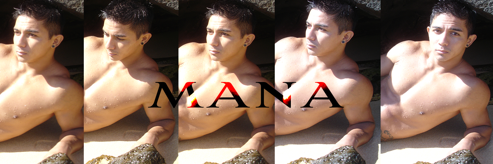

Beachside ft. Mana
Model photoshoot on the east coast of Oahu with Mana
Below are a few select images from a successful photoshoot. Though the images are pretty magical, shooting a handsome man at the beach on a beautiful day in Hawaii can present a number of interesting challenges such as maintaining the model’s engagement, harnessing the mercurial lighting with no additional light sources or reflectors, staying sandfree, water safety and staying focused on the task at hand while the outside world still whizzes in and out around you.
THE ART OF THE PERFECT MODEL SHOT
Whenever I work with a model, I am always certain to shoot tons of images. And when I get a good shot I immediately try to shoot ten more for variety and a chance to strike photographic gold one more time. I believe in bracketing. As I work, I vary the aperture setting, the exposure, lighting temperature and focal length all while interacting with the model through the poses. It's all very engaging and all consuming while I am in the act. When you are photographing outdoors, you are also working with nature which is always changing in one way or another before your very eyes. So it is important to stay focused and to work as quickly as possible. If I am successful at working with all the moving parts, I will usually get least 10 shots out of several hundred that have true enduring artistic and/or sentimental merit like the ones I have posted on this page.